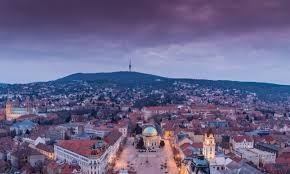

Pécs (németül: Fünfkirchen, horvátul: Pečuh, szerbül: Печуј/Pečuj, a középkorban latinul: Quinque Ecclesiae, az ókorban latinul: Sopianae) megyei jogú város Magyarország délnyugati részén, az ország ötödik legnagyobb települése Budapest, Debrecen, Szeged és Miskolc után. A Dunántúlon pedig a legnagyobb település. Baranya megye és a Pécsi járás székhelye, a Dél-Dunántúl központja. A kelta és pannon törzsek lakta vidéken a 2. század elején a rómaiak alapítottakvárost Sopianae néven. A település a 4. századra tartományi székhellyé és a koraikereszténység egyik jelentős központjává vált. Az ebből az időszakból származóókeresztény temetői építményegyüttest az UNESCO Világörökségi Bizottsága 2000decemberében felvette a világörökségi listára.[3] A püspökséget 1009-ben Szent István király, az ország első egyetemét 1367-benNagy Lajos király alapította a városban. (Ma is itt működik az ország legnagyobblétszámú egyeteme, közel 34 ezer hallgatóval.[4]) A középkori Pécset az országkulturális, művészeti életének egyik központjává tette Janus Pannonius püspök, amagyar humanizmus nagy költője, a latin nyelvű magyar költészet legjelesebbképviselője.[5] A 150 éves török hódoltság után – e korszakból olyan gazdag építészeti emlékeinekmaradtak fent, mint a Gázi Kászim pasa dzsámija a város főterén –, 1780-ban Pécsszabad királyi városi rangot kapott Mária Terézia királynőtől. Ezt követőenerőteljes polgárosodás, gazdasági fejlődés indult el. Az iparosodás a 19. századelső felében jelentősen felgyorsult, a Zsolnay-kerámia, a Littke-pezsgő, azAngster-orgona világhírűvé váltak.[6] Pécs mindig soknemzetiségű település volt, kulturális rétegek rakódtak egymásra,nemzetiségek hagyományai, értékei ötvöződtek két évezredes története során.Magyarok, horvátok és svábok ma is békében élnek egymással gazdag kulturálispolaritásban, így nem meglepő, hogy a város 2010-ben Essennel és Isztambullalegyütt Európa egyik kulturális fővárosa lett. A 2005-ben elfogadott és győztesnekhirdetett pályázat döntő részét a civilek írták, így a Pécs2010 KulturálisFőváros projekt valóban Pécs programja volt. A program 4 kulturális beruházásraépült: Pécsi konferencia- és koncertközpont, Dél-dunántúli Regionális Könyvtár ésTudásközpont, Múzeumok utcája és a Zsolnay Kulturális Negyed. Ezeket mégkiegészítették közterek és parkok újjáélesztése, amelyek mind az Európai Uniótársfinanszírozásában valósultak meg. A megtisztelő cím hatalmas fejlesztéseketindított el a városban. Új, modern szállodák,[7] bevásárlóközpont[8] ésirodaházak épültek.[9][10] Pécs 1998-ban elnyerte az UNESCO Városok a békéért-díját a kisebbségi kultúrákápolása, valamint a délszláv háború menekültjei iránt tanúsított befogadó,toleráns hozzáállása miatt.[11] A város 2007-ben harmadik, 2008-ban pedig másodiklett az „Élhető Települések” (The LivCom Awards[12]) nemzetközi versenyének 75ezer és 200 ezer lélekszám közötti települések kategóriájában.[13]
|  |